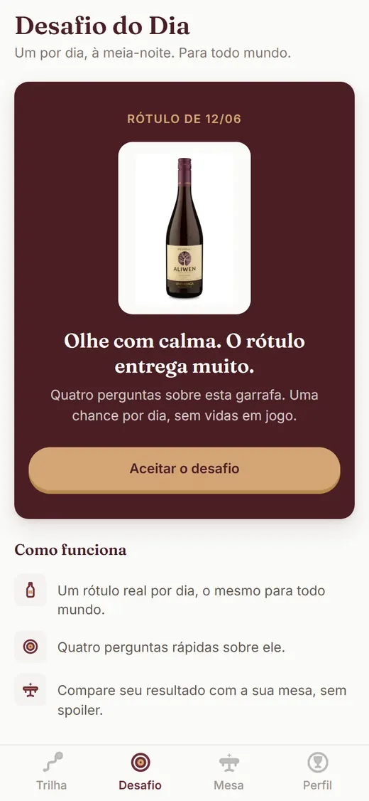
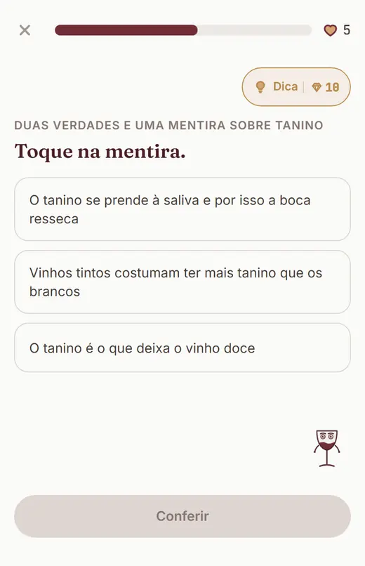

Desafio do Dia: um rótulo, quatro perguntas
Você acha que entende de vinho? O Desafio do Dia responde.
Um rótulo real por dia, o mesmo para todo mundo, à meia-noite. Quatro perguntas, uma chance, grade compartilhável sem spoiler.
Encarar o desafio de hoje Grátis no beta. Sem vidas em jogo: o desafio é por honra.

"Não existe nada mais performático do que entender coisas sobre vinhos."
O comentário mais curtido do nosso levantamento (1.304 curtidas), anonimizado.
Seu paladar tem opinião. Hora de conferir.
Quem gosta de vinho carrega palpite na ponta da língua: a uva, o país, a faixa de preço. Na mesa, o palpite sempre vence, porque ninguém confere. O Desafio do Dia confere. Um rótulo real, quatro perguntas, e nenhuma nota de sommelier para se apoiar: só você, a garrafa e o que seu paladar aprendeu até aqui.
As regras são curtas. À meia-noite entra um rótulo novo, o mesmo para todo mundo. Você tem uma chance por dia, sem vidas em jogo. No fim, sua grade mostra quantas você cravou, sem entregar as respostas: dá para postar e desafiar a mesa sem estragar o jogo de ninguém. Quem pediu teste às cegas nos comentários da internet, e foi muita gente, sabe exatamente o tamanho dessa diversão.
E quando o palpite escorrega? Faz parte. Nos comentários que lemos, o elogio para um erro bonito era "erraste lindamente". Aqui é igual: o erro é parte do jogo, e a explicação que vem junto deixa o próximo palpite mais afiado. Uma grade 2 de 4 publicada com coragem rende mais conversa boa que muito acerto calado.
Nos dias em que o paladar pedir mais, a trilha completa está lá: 30 lições, das uvas que abrem portas até a leitura fina de rótulo, com fatos verificados e um banco com mais de 12 mil vinhos catalogados por trás, 10 mil e tantos no treino. O desafio mede; o treino sobe a régua.
As regras do jogo
-
Meia-noite, rótulo novo
Um rótulo real por dia, igual para todo mundo. Olhe com calma: o rótulo entrega muito.
-
Quatro perguntas, uma chance
Uva, origem, estilo, faixa de preço. Sem consulta, sem segunda tentativa, sem vidas em jogo.
-
Poste a grade, desafie a mesa
O resultado sai em grade compartilhável sem spoiler. Quem vier pelo seu desafio joga o mesmo rótulo.
Prova honesta, em números do produto
Contamos só o que existe no app hoje. Sem estrela inventada, sem contagem de gente que não existe: estamos em beta, e o beta é grátis.
- 1
- rótulo por dia, real, o mesmo para todo mundo
- 4
- perguntas por desafio, uma chance só
- 5 mil+
- rótulos fotografados de verdade no banco do jogo
- 12 mil+
- vinhos catalogados; 10 mil e tantos sustentam perguntas e fichas
O desafio, do jeito que ele aparece na sua tela


O rótulo de hoje já está na mesa.
Quatro perguntas separam o palpite da prova. Se a grade sair 4 de 4, poste. Se sair 2 de 4, poste também: paladar com coragem vale mais que paladar em silêncio.
Encarar o desafio de hoje